Green Schools Program
Transforming schools into environmental learning hubs and empowering students as eco-ambassadors
Program Overview
The Green Schools Program integrates environmental education into school curricula while creating practical learning opportunities through school gardens, waste management systems, and conservation clubs. We're nurturing environmentally conscious citizens from a young age.
400+
Students Educated
5
Schools Participating
12
School Gardens
8
Eco-Clubs Formed
Program Components
Environmental Curriculum
Integration of environmental topics into science, geography, and social studies lessons
School Gardens
Establishment of vegetable gardens and tree nurseries for hands-on learning
Waste Management
Implementation of recycling systems and composting in school compounds
Eco-Clubs
Formation of student environmental clubs for peer-to-peer education
Success Story: Bowa Primary School Transformation
Bowa Primary School has become a model green school in Kwale County. What started as a small school garden has grown into a comprehensive environmental program that involves the entire school community.
"Our students used to throw litter everywhere, but now they're the ones picking up trash and teaching their parents about recycling. The school garden provides vegetables for our lunch program, and the children are learning valuable agricultural skills," says Headteacher Mr. Johnson.
The school has reduced its waste by 70% through recycling and composting, and the garden produces enough vegetables to supplement the school feeding program twice a week.
Program Impact
85%
Increase in environmental awareness among students
70%
Reduction in school waste
1000+
Trees planted by students in school compounds
What Our Partners Say


Program in Action
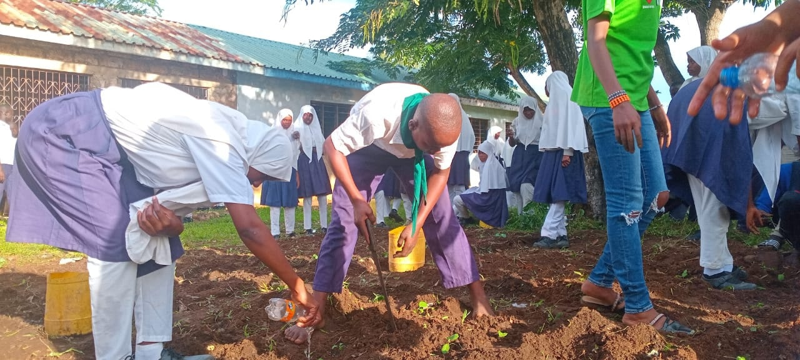
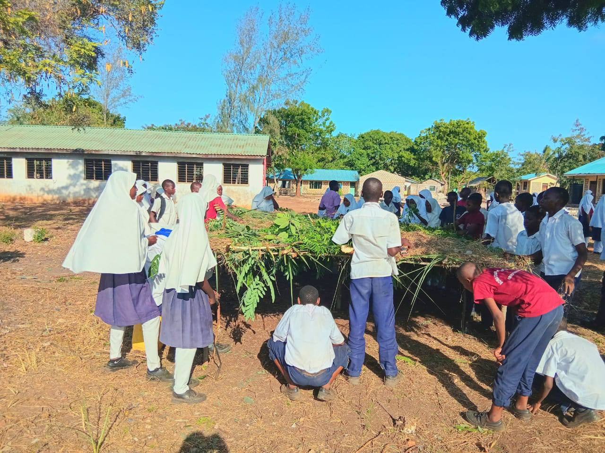
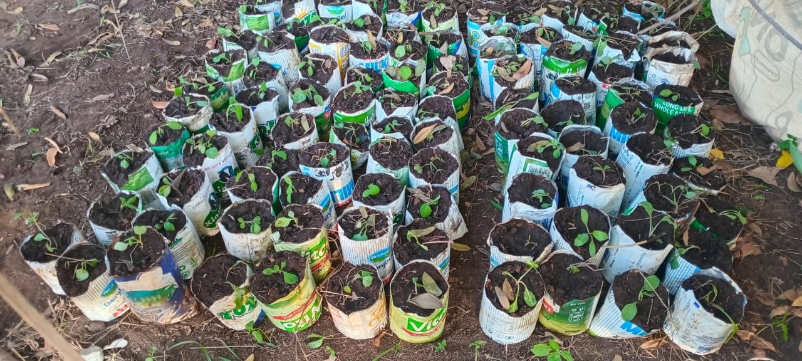
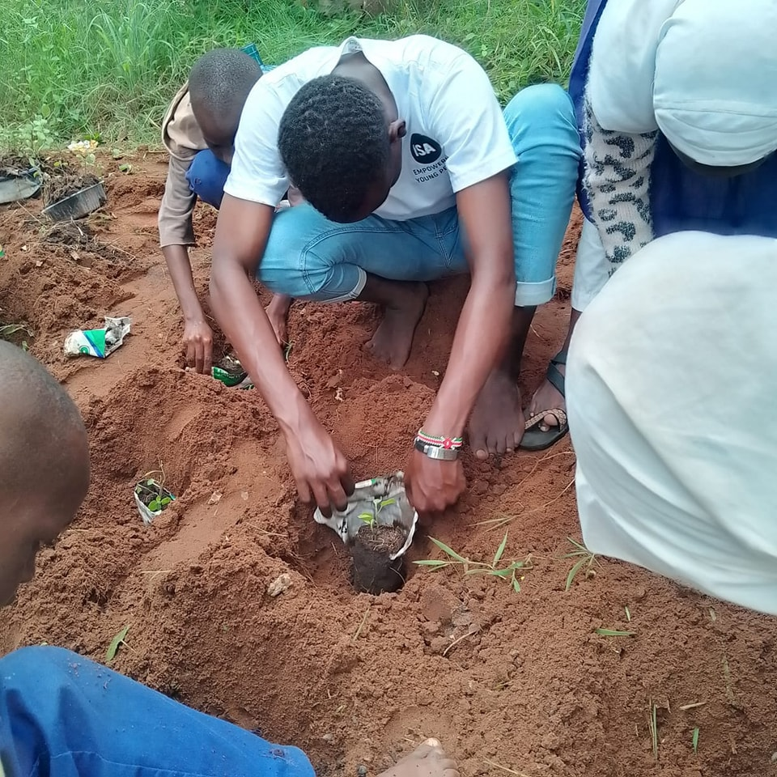
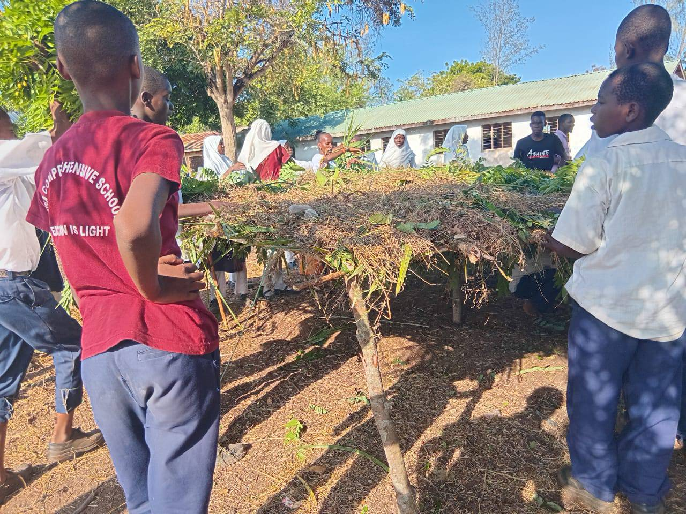
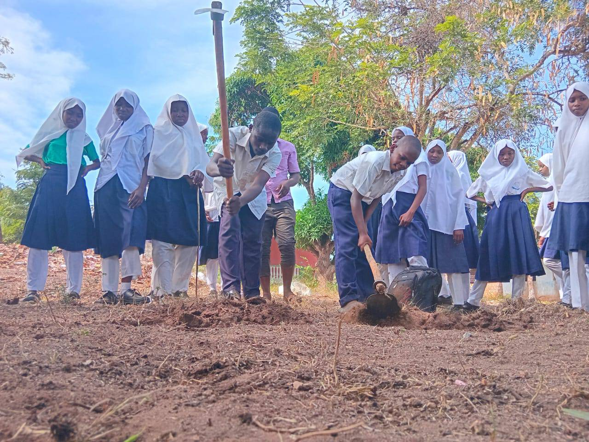
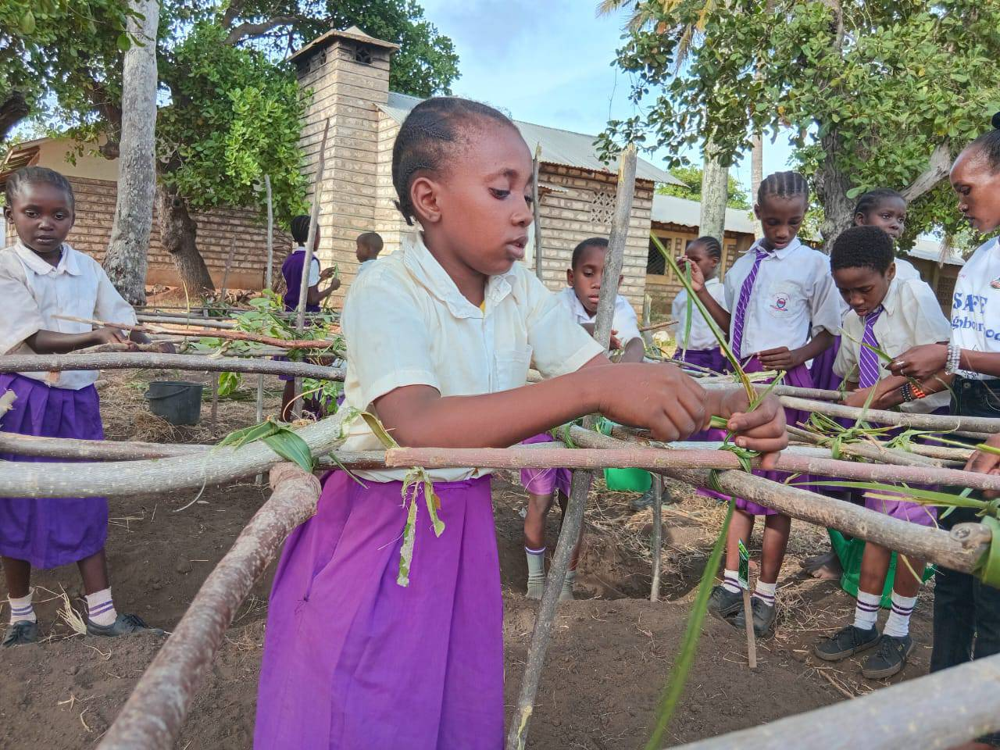
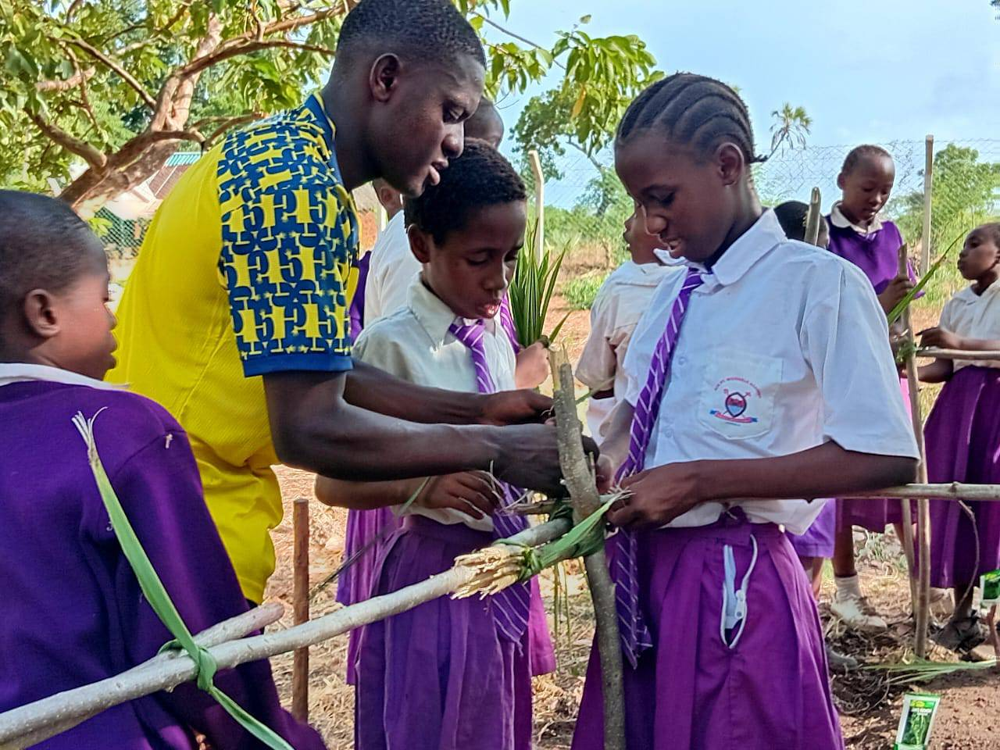
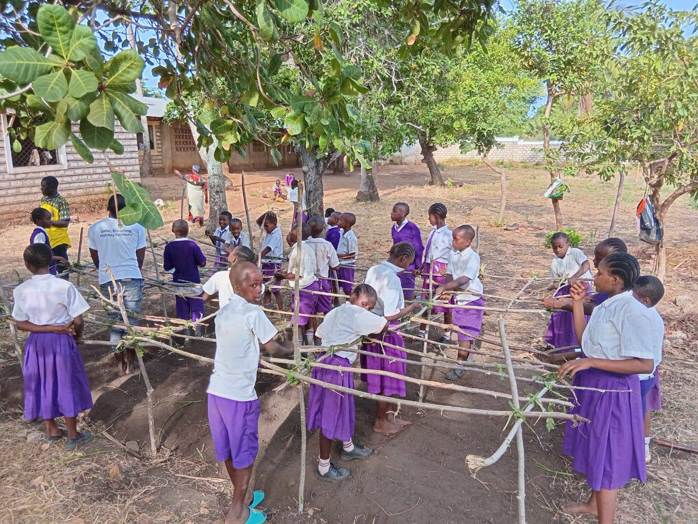
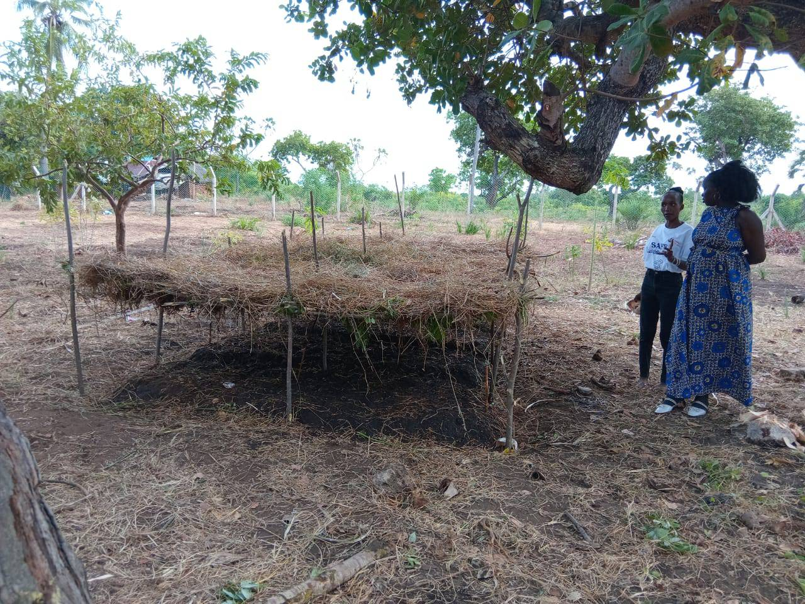
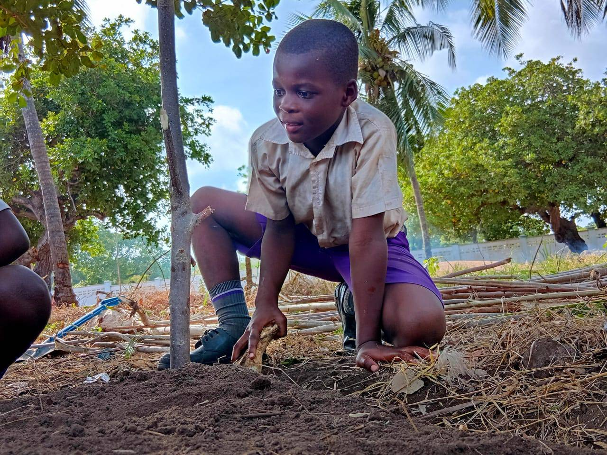
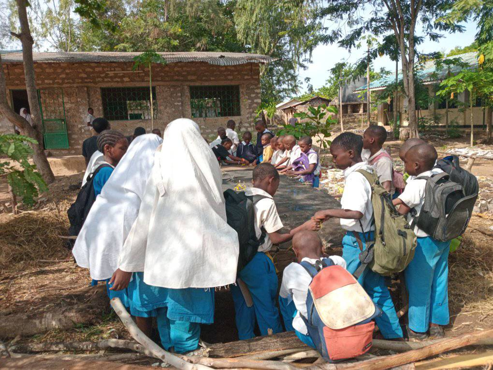
Key Achievements
- Established environmental clubs in all 5 participating schools
- Trained 15 teachers on integrating environmental education
- Created 12 productive school gardens averaging 50m² each
- Reduced school waste through recycling and composting systems
- Organized 3 inter-school environmental competitions
- Produced 800+ eco-ambassadors in the community
Bring Green Schools to Your Institution
Help us expand environmental education to more schools in Kwale County.